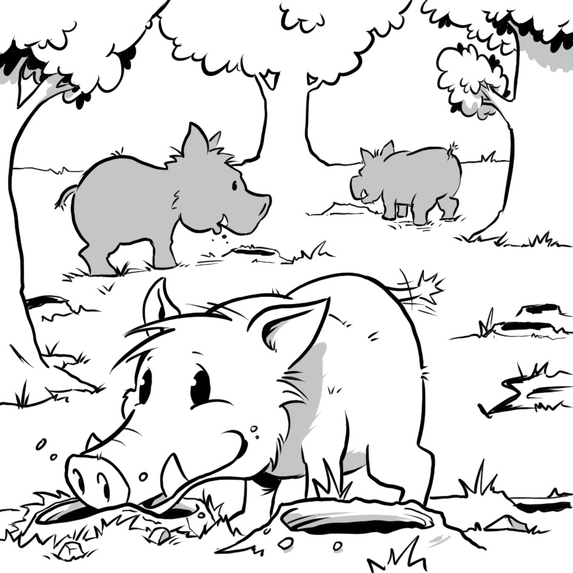
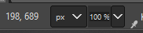
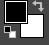
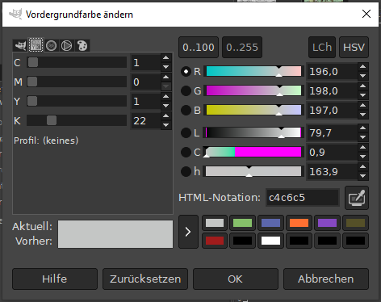
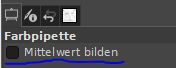
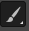
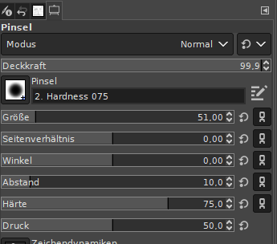
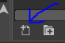
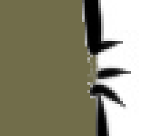
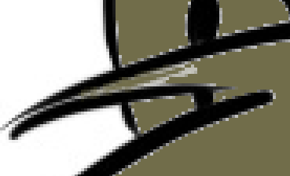

How to: Bilder einfärben
Das How To wird anhand von der Software GIMP (Version 2.10) durchgeführt, alternativ lässt sich jede andere Software zur Bildbearbeitung verwenden. Zu beachten ist natürlich, dass entsprechende Funktionen evtl. anders funktionieren oder anders benannt werden.
Ziel dieser Anleitung ist es, grundlegende Kenntnisse darüber zu vermitteln, wie Bilder, die keine oder andere Farben haben, vor allem Zeichnungen farbig gestaltet werden können.
Es existiert eine offizielle Funktionsreferenz von Gimp, dort können Infos zu allen Werkzeugen und Menüs abgerufen werden. Teil III. Funktionsrefernz gimp.org

Sollte nur ein Überblick über die Arbeitsschritte des Einfärbens gewünscht sein, dann empfiehlt es sich direkt zu dem Abschnitt „Beispiel“ zu springen (Seite 15). Details zu den einzelnen Arbeitsschritten und Werkzeugen können den entsprechenden Abschnitten entnommen werden.
Grundlegendes
Es gibt verschiedene Wege ein Bild einzufärben. Beispielhaft werde ich das an dem über diesen Abschnitt gezeigtem Bild durchführen. Das Bild findet sich im gemeinschaftlichen Arbeitsordner des TBA Teams, so dass die Arbeitsschritte entsprechend selbst nachvollzogen werden können.
Die Bearbeitung des Bildes sollte grundsätzlich in Originalgröße stattfinden. Die Zoomstufe kann in der Mitte des Fensters unter dem Bild eingestellt werden, dort ist es auch möglich die Skalenbeschriftung für die das Bild umgebene Skala zu ändern.

Erklärungen zu den Werkzeugen finden sich unter:
Allgemeiner Hinweis zum Zeichnen harter Linien
Gimp verwendet bei allen Malwerkzeugen automatisch das sogenannte Subpixel-Antialiasing, welches dazu führt, dass Kanten gezeichneter Striche zu zackig aussehen. D.h. selbst wenn man mit einem Pinsel arbeitet, der eine harte Kante hat, dann werden Pixel am Rand des Strichs nicht vollständig gefärbt. Sollte also ein pixelgenaues Arbeiten notwendig sein, dann empfiehlt es sich den Stift als Werkzeug zu verwenden, da dieser das Subpixel-Antialiasing nicht nutzt und damit tatsächlich harte Kanten nutzt.
In den folgenden Abschnitten wird erklärt, wie man möglichst genau mit den anderen Werkzeugen arbeitet, im Regelfall reicht dieses Vorgehen für das Ausmalen von Bildern aus. Sollte aufgrund einer geringen Auflösung aber mal tatsächlich pixelgenaues Arbeiten mit harten Kanten notwendig sein, dann sollte zumindest für die Kanten das Stift Werkzeug genutzt werden.
Farben zur Bearbeitung auswählen
Zum Auswählen von Farben gibt es verschiedene Möglichkeiten.
Die erste Funktion findet sich in der Werkzeugleiste links oben in der Ecke: das Pipetten Werkzeug . Durch Auswahl dieses Werkzeugs ist es möglich per Linksklick Farben aus einem Bild zu extrahieren und die Nutzung durch andere Werkzeuge zu ermöglichen.
Die so ausgewählte Farbe ist in den zwei leicht überlappenden Quadraten  zu sehen; die Farbe im vorne liegenden Quadrat ist die aktive Farbauswahl, die sogenannte Vordergrundfarbe (VG-Farbe). Dementsprechend nennt sich die Farbe im hinteren Quadrat Hintergrundfarbe (HG-Farbe).
Eine Farbauswahl kann mit dieser Option auch aus einem anderen Bild übertragen werden. Dazu muss das Bild, welches als Vorlage dienen soll, auch in Gimp geöffnet werden, anschließend wählt man mit der Pipette die gewünschte Farbe aus dem Bild aus und kann über den Reiter oben in der Mitte des Bildschirms wieder zurück zu dem zu bearbeitenden Bild wechseln.
Es besteht auch die Möglichkeit 2 Farben auszuwählen und durch den Klick auf die kleinen Pfeile rechts oben neben den Quadraten zwischen ihnen hin und her zu schalten. Um eine zweite Farbe auszuwählen, muss die Option „Hintergrundfarbe festlegen“ im Eigenschaftsfenster des Pipetten Werkzeugs ausgewählt werden oder durch einen Klick auf die Pfeile, rechts oben neben den Quadraten die Farbe, umgeschaltet werden.
Weitere Möglichkeiten der Farbauswahl finden sich, wenn man auf die 2 Quadrate links klickt.
Das Fenster „Vordergrundfarbe ändern“ ermöglicht es über die Reiter links im Fenster sowohl Farben im Farbverlauf auszuwählen als auch über einen CMYK Farbcode (Reiter 2 von links). Rechts im Fenster findet sich die Möglichkeit zur Eingabe eines RGB-Farbcodes. Neben diesen Möglichkeiten bietet das Fenster auch ein Pipetten Werkzeug, welches genauso genutzt werden kann wie das zuvor beschriebene.
Mit dem Unterschied, dass die ausgewählte Farbe in eine Farbpalette übertragen und für später gespeichert werden kann; diese erkennt man rechts unten im Fenster. Links daneben findet sich die aktuelle und zuvor ausgewählte Farbe, durch einen Klick auf den Pfeil , ist es möglich die aktuelle Farbe in die Palette zu übertragen und für später vorzuhalten.

Der große Vorteil der Pipetten Funktion ist, dass nicht jedes Mal Farbcodes eingetragen werden müssen und Vorlagen, wie z.B. das Foto eines Wildschweins wie in unserem Beispiel, als Farbvorlage dienen kann.
Achtung:
Zu beachten ist, dass die Pipette immer nur gezielt einen Pixel auswählt.
Bei hochauflösenden Fotos ist es oft so das verschiedene Farbpixel den Farbeindruck gestalten. Will man versuchen diesen Eindruck zu extrahieren kann es sinnvoll sein die Option „Mittelwert bilden“ im Eigenschaftsfenster des Farbpipetten Werkzeuges auszuwählen. Dann wird der gemittelte Farbwert der Umgebenden Pixel verwendet. Dies kann eine Option sein eine gewünschte Farbe aus einem Bild zu extrahieren.
Diese Option findet sich nur bei dem Pipettenwerkzeug aus der Werkzeugleiste und kann durch links Klick auf das Kästchen links daneben ausgewählt werden.

Generell ist es ratsam bei hochauflösenden Bildern, gerade Fotos auf Pixelebene, ranzuzoomen, um sicher zu gehen, dass man die richtige Farbe auswählt.
Einfärben mit dem Pinselwerkzeug
Das Pinselwerkzeug (neuntes von links in der Werkzeugleiste) [width=20] ist das grundlegende Werkzeug zum Ausmalen von Flächen, es ermöglicht sowohl harte als auch weiche Striche zu ziehen und kann pixelgenau skaliert werden, so dass auch einzelne Pixel farblich verändert werden können.
Auch kann es hilfreich sein, um große Flächen schnell einzufärben, wenn diese nicht klar abgetrennt sind.
Sollte man versuchen mit dem Pinsel Bereiche auszumalen, dann empfiehlt es sich eine entsprechend große Zoomstufe zu wählen, um detail- bzw. pixelgenau arbeiten zu können.
Gerade bei nicht hoch aufgelösten Bildern ist es oft notwendig die Ränder mit dem Pinsel manuell zu bearbeiten, um Pixel mit der falschen Farbe zu färben. Ein schwarzer Pixel in sonst nur roten sticht einfach leicht heraus.
Einstellungen:

Es können verschiedene Einstellungen vorgenommen werden. Der Modus kann in den meisten Fällen auf „Normal“ gelassen werden. Nur in Sonderfällen ist es beim Ausmalen von Bildern sinnvoll die anderen Modi zu benutzen. Die Deckkraft ist in der Regel bei 100 zu setzen, nur wenn weniger Deckkraft gewünscht ist wie z.B. beim Erstellen von Schatten.
Schatten können mit der Pinselfunktion dadurch erstellt werden, dass ein Pinsel mit einer passenden Härte ausgewählt wird, z.B. 75 und die Farbe schwarz ausgewählt wird. Die Deckkraft wird dann reduziert, um den eigentlichen Schatteneffekt zu erzeugen. Dabei ist es abhängig davon, wie dunkel der Schatten sein soll welchen Wert man wählt. Am besten startet man mit 50,0 und bewegt sich dann nach oben oder unten und schaut, was am besten zum Bild passt. Zu beachten ist, dass der Schatten in einem Zug gezeichnet werden sollte, was vielleicht dazu führt, dass der Vorgang etwas schwieriger wird. Das heißt man darf beim Malen des Schattens die linke Maustaste nicht loslassen, man kann über einen Bereich mehrfach drüber gehen, aber nur solange man die Maustaste gedrückt hält, ansonsten übermalt das Werkzeug den zuvor gezeichneten Schatten und dieser wird dunkler.
Eine Fortgeschrittene Variante nutzt dasselbe Vorgehen, kombiniert es allerdings mit der Ebenen Struktur. Man erstellt also rechts unten in dem entsprechenden Fenster eine neue Ebene. An den Einstellungen der Ebene muss man erstmal nichts verändern. Danach wählt man in dem Feld darüber die neue erstellte Ebene durch einen Linksklick aus und zeichnet auf dieser dann die Schatten auf das Bild. Das hat den Vorteil, dass die Schatten auf einer eigenen Ebene liegen und man die schattierte Farbe im Originalbild noch verändern kann. Für genaue Erläuterungen wie Ebenen funktionieren, siehe Abschnitt 5 (Video 5).

Die dritte Option des Reiters dreht sich um die Art des Pinsels, dazu sei gesagt, dass man bis auf die Form des Pinsels alle Einstellungen, die der Pinsel mit sich bringt, verändern kann.
Grundsätzlich geht es bei den Grundarten (den runden Pinseln) um den Härtegrad (Härte), welche wir auch manuell verändern könne, je nachdem wie sanft der Übergang zu anderen Farbbereichen sein soll. Die wichtigsten Optionen sind somit die Größe und die Härte.
Die restlichen Eigenschaften werden im Abschnitt Werkzeugeigenschaften erklärt.
In Kombination mit dem Füllen Werkzeug ist es nützlich, um Lücken in Zeichnungen zu schließen und so geschlossene Bereiche zu schaffen die gut von dem Füllen Werkzeug erfasst werden können.
Dies ist vor allem dann sinnvoll, wenn zwischen 2 eigentlich getrennt zu färbenden Flächen keine Trennung vorgenommen wurde, wie z.B. bei dem mittleren Baum unseres Beispiels. Die Baumkrone muss eine andere Farbe bekommen als der Baumstamm. Um das zu erreichen, kann man mit dem Pinsel entsprechend eine farbliche Trennlinie einzeichnen und so 2 getrennte und durch das Füllwerkzeug bearbeitbare Bereiche schaffen. Man erspart sich viel Arbeit, wenn man nach diesen Lücken sucht und sie farblich schließt, statt das Bild mit dem Pinsel auszumalen.
Wichtig ist dabei sie farblich zu schließen und nicht die Ränder nachzubauen. Oft sind die Lücken Absicht und tragen zur optischen Gestalt des Bildes bei.
Achtung, Linienbildung bei Füll und Pinsel Werkzeug in Kombination
Aufgrund des Subpixel-Antialiasing von Gimp kommt es dazu, dass sich zwischen dem mit dem Füllwerkzeug nach der Abtrennung gefüllten Bereich und der Trennlinie eine weiße Linie bildet. Diese Linie kann einfach mit dem Pinselwerkzeug in entsprechender Größe übermalt werden.
Diese Linienbildung kann vermieden werden, wenn statt des Pinselwerkzeugs das Stiftwerkzeug verwendet wird.
Allerdings muss dann der Übergang zu dem benachbarten andersfarbigen Bereich auch nachbearbeitet werden, um keinen harten Übergang zu erzeugen, dies kann je nach Bild aufwendiger sein als die Linie mit dem Pinselwerkzeug nachzuziehen.

